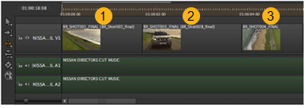
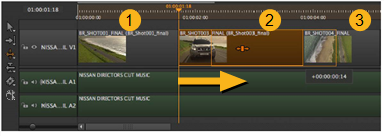
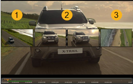

的 幻灯片剪辑 工具允许您在目标项之前和/或之后移动相对于项的剪辑实例，而不更改其长度或时间线输出。激活 幻灯片剪辑 通过单击工具或按 E 两次。
目标两侧的剪辑实例在其控制柄的限制内被缩短或加长，以适应幻灯片。
注意: 周围的剪辑实例必须具有句柄才能使用 幻灯片 工具。
单击目标剪辑实例，然后将其拖到新位置，然后释放鼠标以完成幻灯片。
例如，如果将目标剪辑实例 (2) 向右滑动五帧，则前面的项目 (1) 将在五帧之后结束，下一个项目 (3) 五帧后开始。
第一个图像显示包含三个剪辑实例的时间线，第二个图像显示目标 (2) 向右滑动的相同剪辑实例。


查看器在左侧显示上一个剪辑实例的新终点，在右侧显示下一个剪辑实例的新起点，允许您准确测量幻灯片。
两个中心图像 (2) 代表目标剪辑实例的开始和结束帧，这些帧不会改变。

|
|